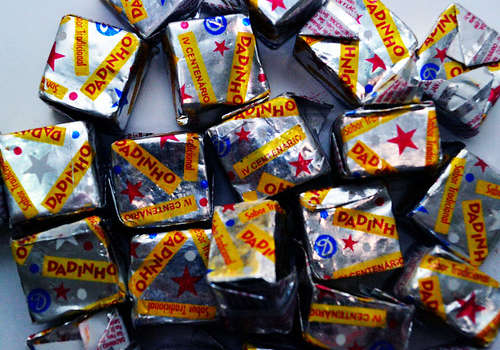
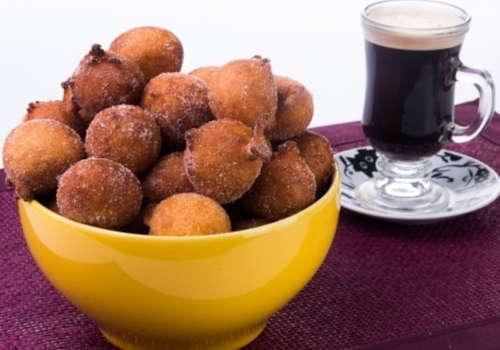

GreeAHem
Greetings.
(in a non-ominous way)
in a chat with a wizard I decided to trail a
similar way of thinking as their's.
You may wonder what is it but I will leave you to it.
this will be one of the few times, to not limit to the only, I direct a monologue to the viewer, i.e. You.
if you wish to immerse, think of this as a home, my home! In neocities. The reason you're here, and I'm not, is whatever you come up with.
so you're in my house, and I hope you find it as comfortable as I do!
being more straightforward...
you my find many of my likings here but heres some spoiler...
major breakthrough
abobora stands for Pumpkin. Theres a
pumpkin amorphous sweet
that i adore and its definitively the best thing in the world.
Other than that I also love
a variant of Reese's

we have here,
Cinnamon roll,
one I've seen people calling Honey Cakes, I prefer
pão de Mel
 .
.
And last but not least
bolinho de chuva

(free translation: lil rain cake [way better than
dumplings]).
i really enjoy doing a multitude of things, but mostly art, aaand I
tend to do all of them at the same time as any normal sensible
person would.
-
The ones I often practice is:
- illustration;
- (digital, pixel or default, and tradicional, mostly inkpen)
- writing;
- (mostly esoteric prose)
- photographing;
- animation;
- music;
- anything with bass
all focusing either on horror or ambient but sometimes I do silly stuff.
my inspiration mainly comes from:
there are a *ton* more but these are the "personality defining" ones
I enjoy rpg too! Mostly delving in
GUMSHOE and investigation in general,
so Esoterrorists, Trail of Cthulhu, etc, but i do DnD too
My most obvious one is coding, especially front-end, but I aim to
someday be a game-dev at least in one game!
The ones I consume:
Movies
Im a big fan of horror and animation in general, so my top 3 is
Coraline, Skinamarink and Across the Spiderverse. The amount of
anxiety that i get watching these is insane.
(specially Skinamarink but that's reasonable)
Music
anything with cool bass, but rock, post
punk, jazz and indie games ost ( I like a LOT but the go for is
Life is Strange!) too.
I really go for indie in
everything, but mostly games. Speaking of which...
Games
i could go for some hours but, as mentioned before, I intend to
place indicatives around this web. However I won't leave you with
nothing.
Any games with rich universe or art design breaks any of my
cognitive functions...
I'd say for the moment, The Eternal
Life is Strange (specially the Captain
Spirit standalone), Blasphemous and
Fran Bow.
Reading
as for reading I don't have thaaat enthusiasm, so anything that
relates with the others topics is fine.
my top three, hmmm...
- Angústia
DivinaComeddia- Oyasumi Punpun
I like hard to read (in a technical sense) books.
That's it! But just for the moment, as you can see Krilly is on the painting still!
back to the top